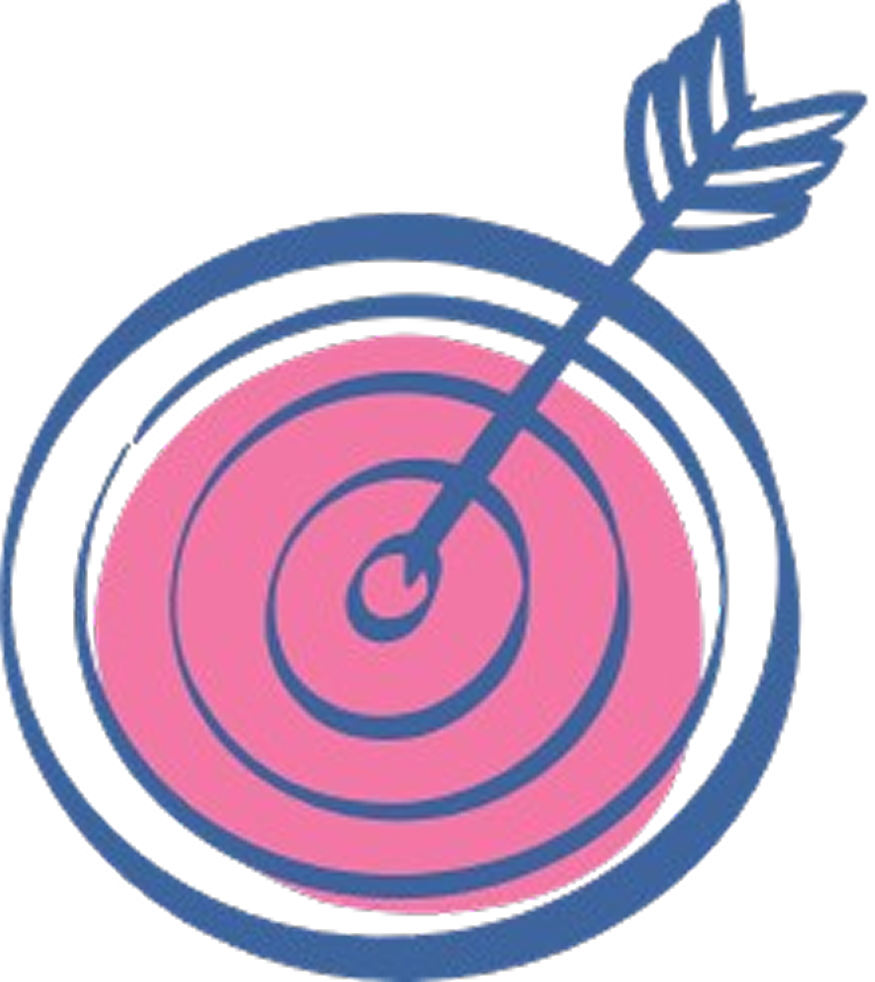

I specialize in building resilient systems— and the teams that power them.

With nearly two decades in innovation leadership, I’ve managed everything from prototyping and product strategy to cloud transformation, connectivity, and large-scale data center operations. My work explores how human-centered design and emerging technologies can drive efficiency, resilience, and impact across complex systems.
View My Work